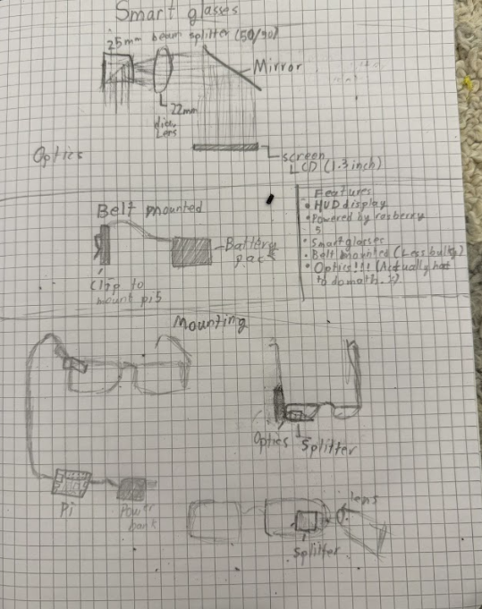

Project Overview
LookingGlass is a heads-up display designed to mount directly onto my glasses. The idea came from seeing other projects like the Optigon and DIY Edith glasses, and realizing that since I already wear glasses most of the time, I might as well give them some extra functionality.
The goal is to create a lightweight, usable HUD that can display information directly in my field of view without completely blocking vision.
Optics & Hardware
The optics for LookingGlass are intentionally simple. The display is mounted off to the side of the glasses and reflected using a mirror. A lens allows my eyes to properly focus on the OLED screen, and a beam splitter lets me see the display while still seeing through the glasses.
For computing, I’m using a Raspberry Pi 5 connected to a battery pack. This is definitely overkill for the project, but it’s what I had on hand. A more refined version could use a smaller board and a custom charging system.
Taking inspiration from the Optigon, the Raspberry Pi and battery are mounted on a belt, keeping weight off the glasses themselves.
CAD Design
All of the mechanical parts were designed in CAD. The parts are intended to be 3D printed in PLA, with most components either friction-fit or secured using hot glue.
Build & Testing
This is the physical build of LookingGlass. The display is clearly readable, and while the OLED can’t show many characters at a large font size, I wrote code to smoothly scroll text across the screen.
Even in this early state, the project proves that a functional, wearable HUD is very achievable with simple optics and off-the-shelf components.
Future Improvements
Future versions could focus on reducing size and power consumption, improving optics, and adding more advanced software features such as notifications, navigation, or sensor data overlays.